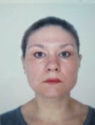

Biography
Rybakova Tetiana

Born in the city of Alchevsk, Lugansk region, I graduated from high school number 1.
Since September 2018, I have been working as an assistant professor at the Department of Economics of the Higher Educational Institution “Pereyaslav-Khmelnitsky State Pedagogical University named after Grigory Skovoroda”. I am a member of the editorial board of the scientific publication "University Economic Bulletin". I am a member of the Erasmus + expert group (Key Action 1- Mobility for learners and staff).